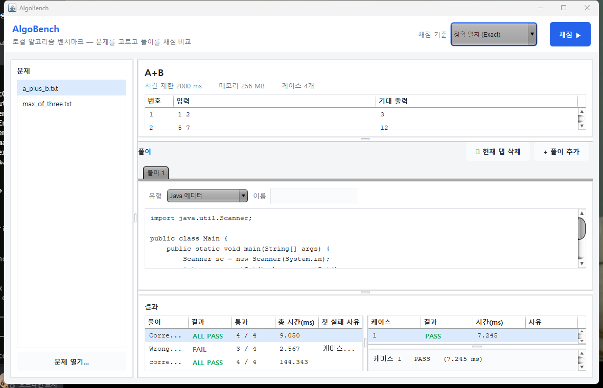
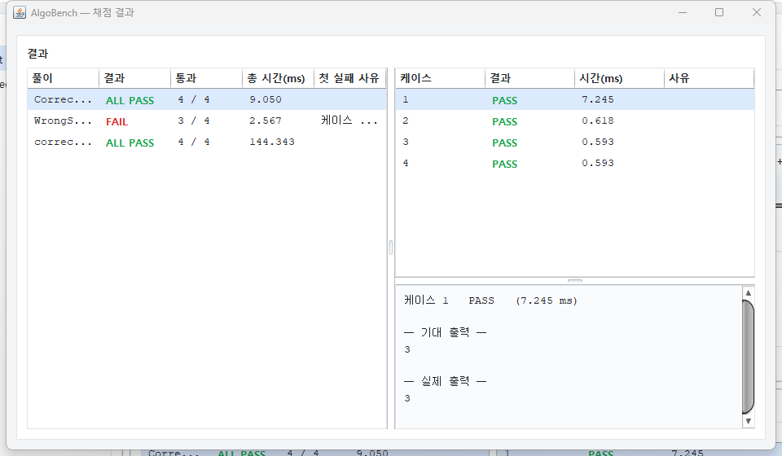

AlgoBench는 백준·프로그래머스 같은 외부 온라인 저지에 의존하지 않고, 로컬에 직접 구성한 문제 세트에 여러 풀이 코드를 동일한 조건으로 실행해 정답 여부와 실행 시간을 한눈에 비교하는 학습용 stand-alone 벤치마킹 도구다.
같은 문제를 서로 다른 알고리즘·언어로 풀었을 때 어느 풀이가 정확하고 얼마나 빠른지 직접 확인하려면, 보통 풀이마다 수작업으로 입력을 넣어 보며 출력과 시간을 비교해야 한다. AlgoBench는 이 반복 작업을 로드 → 실행 → 비교 → 결과 수집 → 리포팅의 자동 파이프라인으로 묶어, 하나의 문제 파일과 여러 풀이를 주면 풀이별 통과/실패와 케이스별 실행 시간, 그리고 풀이 간 순위 요약까지 산출한다.

그림 1은 같은 문제(A+B)에 세 풀이를 올려 채점한 결과다. 정답 Java 풀이는 ALL PASS (4/4), 버그가 있는 풀이는 FAIL (3/4)로 첫 실패 사유까지 표시되며, 외부 Python 풀이도 동일한 표에서 함께 비교된다. 채점 기준(정확 일치 / 공백 무시)은 우상단에서 즉시 교체할 수 있다.
데이터는 한 방향으로 흐른다. 각 단계는 독립된 패키지이고, 변경 가능성이 높은 지점은 모두 인터페이스로 추상화돼 있어 엔진 수정 없이 구현체만 교체할 수 있다.
문제 파일을 파싱해 불변 Problem으로 만든 뒤, 각 풀이를 케이스별로 실행하고, 그 출력을 비교기로 판정한다. 판정 결과는 GradingTask(한 풀이 = 한 작업 단위)가 모아 BenchmarkResult로 집계하며, JudgeEngine이 스레드 풀로 이를 병렬 수행하고 결과를 메인 스레드에서 순차적으로 로깅한다.
| 패키지 | 핵심 타입 | 책임 |
|---|---|---|
| domain | Problem, TestCase | 불변 도메인 객체 — 문제와 테스트 케이스 |
| loader | ProblemLoader | 자체 텍스트 포맷 파싱(헤더 + ### 케이스 블록) |
| solution | Solution «if», ExecutionResult, JavaJarSolution, ExternalProcessSolution | 풀이 실행의 다형성 지점 — JVM 내부 / 외부 프로세스 |
| compare | OutputComparator «if», Exact· WhitespaceNormalizing | 채점 정책 — 출력 일치 판정 기준 |
| engine | JudgeEngine, GradingTask | 비동기 채점 오케스트레이션 |
| result | BenchmarkResult, TestCaseResult, ResultLogger·Formatter «if», Console·Csv·Summary | 결과 데이터 + 콘솔/CSV/순위 요약 출력 |
엔진은 구체 클래스가 아니라 이 네 인터페이스에만 의존한다. 새 채점 기준이나 출력 형식이 필요하면 인터페이스를 구현한 클래스 하나를 추가해 주입하기만 하면 되고, JudgeEngine·GradingTask· Solution은 한 줄도 고치지 않는다.
GradingTask는 케이스마다 다음 순서로 가장 먼저 걸리는 조건을 판정으로 삼는다. 이 우선순위 덕분에 "왜 틀렸는가"가 항상 명확한 한 가지 사유로 환원된다.
| 순위 | 조건 | 판정 | 의미 |
|---|---|---|---|
| 1 | isTimedOut() | TIMEOUT | 시간 제한 초과 |
| 2 | exitCode ≠ 0 | RUNTIME_ERROR | 비정상 종료 (stderr 요약 첨부) |
| 3 | !matches(actual) | WRONG_ANSWER | 출력 불일치 |
| 4 | else | PASS | 정상 종료 + 출력 일치 |
정답·오답·무한루프(타임아웃)·외부 Python 풀이를 한 번에 채점한 실제 콘솔 출력이다. 마지막 비교 요약은 통과 우선 → 총 시간 오름차순으로 정렬하고 최속 정답을 ★로 강조한다.
같은 결과는 reports/result.csv로도 기록되며(헤더 + 풀이별 1행), GUI에서는 아래 그림처럼 풀이별 요약표·케이스표·케이스 상세(기대/실제 출력)로 펼쳐진다.

벤치마킹 도구의 본질은 "다양함을 같은 잣대로 비교"하는 것이다. 그런데 그 잣대 자체 — 채점 기준과 출력 방식 — 가 가장 자주 바뀐다. 이 가변성을 어디에 가두느냐가 설계의 핵심이었다.
여러 문제를 풀다 보면 채점 방식과 기준이 제각각이다. 어떤 문제는 공백·줄바꿈까지 정확히 맞아야 하고, 어떤 문제는 토큰만 같으면 정답이며, 대소문자를 무시해야 할 때도 있다. 결과를 콘솔로만 볼 때도, CSV로 남겨야 할 때도 있다. 만약 이 분기들을 JudgeEngine 내부의 조건문으로 처리했다면, 기준이 하나 늘 때마다 엔진을 수정해야 하고 — 그때마다 이미 검증된 채점 로직 전체가 회귀 위험에 노출된다.
그래서 변하는 것(비교 정책 OutputComparator, 출력 정책 ResultLogger/ResultFormatter, 실행 방식 Solution)과 변하지 않는 것(채점 오케스트레이션 JudgeEngine)을 인터페이스 경계로 갈라 두었다. 새 기준은 작은 구현 클래스 하나의 추가로 끝나고, 기존 코드는 닫혀 있다. 유지보수 비용이 "전 영역 회귀 테스트"에서 "신규 클래스 단위 검증"으로 줄어든다.
| 원칙 | 적용 지점 | 효과 |
|---|---|---|
| SRP | 로드/실행/비교/수집/리포팅을 패키지로 분리 | 한 클래스가 한 가지 이유로만 바뀐다 |
| OCP | 새 Comparator·Logger는 추가만, 엔진은 불변 | 확장에 열리고 수정에 닫힌다 |
| LSP | JavaJar·ExternalProcess가 동일 stdin→stdout 계약 준수 | 엔진이 구현체를 구분 없이 다룬다 |
| ISP | Comparator·Logger·Formatter·Solution을 작은 단일 목적 인터페이스로 분할 | 구현체가 불필요한 메서드에 끌려가지 않는다 |
| DIP | JudgeEngine이 구체 클래스가 아닌 인터페이스에 의존, Logger는 생성자 주입 | 정책을 외부에서 갈아끼운다 |
설계는 "한 번에 그린 다이어그램"이 아니라 반복 리뷰로 수렴시켰다. 절차는 일관됐다 — ① 프롬프트에 기능 요구(FR)와 제약(NFR)을 명확히 못박고, ② 내가 먼저 구상한 클래스 다이어그램을 기준안으로 제시한 뒤, ③ 그 안을 AI에게 비판적으로 검토받아 결함을 찾아 고치고, ④ 수정안을 다시 다른 시각으로 재평가하는 교차 리뷰를 돌렸다.
핵심은, 비싼 자원(구현·디버깅 시간)을 쓰기 전에 값싼 자원(설계 리뷰)으로 결함을 제거했다는 점이다. 명확한 요구 명세와 기준 다이어그램이 있었기에, 리뷰는 "무엇을 만들지"가 아니라 "이 구조의 약점이 무엇인지"에 집중할 수 있었다.
구현의 목표는 "빠르게 많이"가 아니라 "오류를 최소화하며 일관되게"였다. 도구·작업 단위·문서화의 세 축으로 이를 떠받쳤다.
LLM은 한 번에 다룰 수 있는 맥락(토큰)에 한도가 있어, 작업을 크게 잡으면 도중에 끊겨 앞뒤 일관성이 깨지기 쉽다. 이를 막기 위해 전체 구현을 의존성 기준 8개 마일스톤(M0–M7)으로 쪼개, 한 세션에서 다루는 작업량을 항상 "끝까지 검증 가능한 크기"로 유지했다.
| 단계 | 내용 |
|---|---|
| M0 | 프로젝트 골격 · build.ps1 · README |
| M1 | 도메인(Problem·TestCase) + 비교기 3종 |
| M2 · M3 · M4 | 로더+샘플문제 / 결과+로거+요약 / 풀이 실행(JVM·외부) |
| M5 · M6 | 엔진(GradingTask·JudgeEngine) / Main + 샘플 풀이 |
| M7 | End-to-End 검증 (정답·오답·타임아웃·외부 다형성) |
모든 계획과 결정을 .md 파일로 남겨, 세션이 바뀌어도 Claude Code가 동일한 맥락을 이어받게 했다. plan_claude3.md(설계의 단일 진실 공급원), MILESTONES.md(단계 분해), CLAUDE.md(작업 가이드·비자명 규칙), ai_rec.md(전 대화·행동 기록)가 그것이다. 또한 프로젝트 구조 전체를 HTML 문서로 시각화(algobench_visual.html, docs/*.html)해, 사람이 구조를 직접 파악·관리하기 쉽게 했다 — 본 보고서의 그림들도 그 연장선이다.
실제 마찰의 대부분은 알고리즘이 아니라 플랫폼 경계(Windows 인코딩, cmd 제약, JVM 전역 상태)에서 나왔다. 증상을 격리(probe)해 근본 원인을 짚고 고치는 방식으로 풀었다.
| 증상 | 근본 원인 | 해결 |
|---|---|---|
| 자식 JVM 풀이의 한글 출력 깨짐 | Java 18+ 파이프 출력은 stdout.encoding을 따르는데 Windows 기본이 MS949 | -Dstdout.encoding=UTF-8 인자를 자동 삽입 |
| GUI 한글이 □(두부)로 표시 | Segoe UI·Consolas에 한글 글리프 없음(canDisplay('가')=false) | UI 폰트를 Malgun Gothic / 논리 폰트로 교체 |
| .bat 실행 시 명령이 토막남 (java→va) | 파일이 LF 줄바꿈 → cmd가 라인을 잘못 끊음 | CRLF(UTF-8 no-BOM)로 변환 |
| 리다이렉트 입력 시 메뉴 무한루프 | chcp 65001 상태에서 파이프 stdin은 set /p가 빈 값 반환 | 비대화식 인자 모드 + EOF 가드 추가 |
| javac가 한글·공백 경로에서 실패 | argfile 절대경로의 공백(자프 과제) 토막 + cmd glob 미확장 | for 열거 + 따옴표 + delayed expansion |
| Java 풀이 병렬 시 출력 섞임 | System.out이 JVM 전역 — 스트림 교체가 충돌 | 교체 구간을 static 락으로 직렬화 |
최종 E2E 데모(build.ps1)에서 네 시나리오가 모두 의도대로 동작했다 — 정답 풀이 ALL PASS, 버그 풀이의 특정 케이스 WRONG_ANSWER(기대 7 / 실제 13), 무한루프 풀이의 케이스별 TIMEOUT(이후에도 프로그램 계속 진행), 외부 Python 풀이 ALL PASS(다형성 확인). 실행 시간은 0ms로 뭉개지지 않고 소수 ms로 측정됐고, CSV는 매 실행 새로 기록되며 한글이 정상 보존됐다.
이 프로젝트를 포함해 Claude Code·Codex 같은 도구로 개발하며 얻은 결론은 하나로 모인다 — 인간의 손은 저수준 구현이 아니라 고수준 구조에 놓여야 한다.
코드 한 줄, 구현 디테일을 사람이 일일이 관리하는 방식은 오히려 개발의 병목을 만든다. Gemma·Qwen-Coder 같은 경량 LLM이나 Gemini 2.5 Flash 수준에서는 신뢰도 때문에 사람이 산출물을 꼼꼼히 들여다봐야 할 수 있다. 그러나 GPT-5.5 xhigh, Opus 4.8 xhigh~max 급 모델은 명확한 프롬프트만 주어지면 단순·정형 기능을 사람보다 빠르고 정확하게 구현한다. 이 프로젝트에서도 파서·로거·프로세스 실행 같은 정형 코드는 LLM이 맡았을 때 구현 시간이 줄고 품질이 올라갔다.
결론적으로, Critical한 기능을 제외한 영역은 구조화·추상화 같은 고수준 관리에 집중하고, 단순 기능의 구현 자체는 LLM에 위임하는 편이 개발 시간 단축과 코드 품질 향상을 동시에 가져온다. 인간이 코드를 직접 타이핑하는 능력의 가치는 빠르게 줄고 있다.
한편 소프트웨어 구조는 사용자의 변화와 트렌드 같은 가변적 요소에서 벗어나기 어렵다. 요구는 끊임없이 바뀌고, 그 변화를 견디는 것은 결국 잘 그어진 경계다. 그러므로 우리가 더 깊이 단련해야 할 것은 소프트웨어 설계 능력이다 — 인터페이스를 분리하고, 책임을 나누고, 기능 간의 관계를 설정해 프로젝트에 유지보수 용이성과 확장의 유연함을 부여하는 능력 말이다.
ai_rec.md에 시간순으로 누적된 전 대화·행동 기록을 한 장으로 요약한다. 설계 수렴(세션 1–6) → 단계 구현(세션 7) → JAR·GUI 확장(세션 8)의 흐름이다.